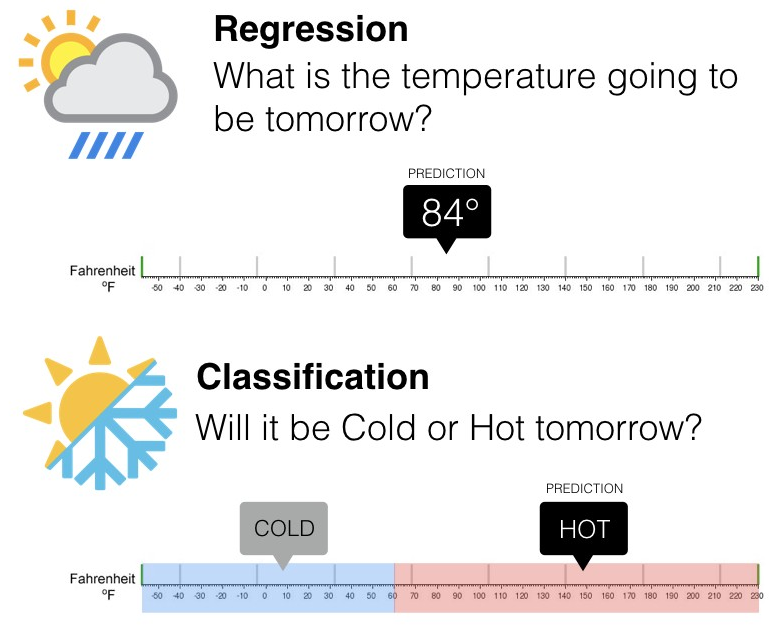
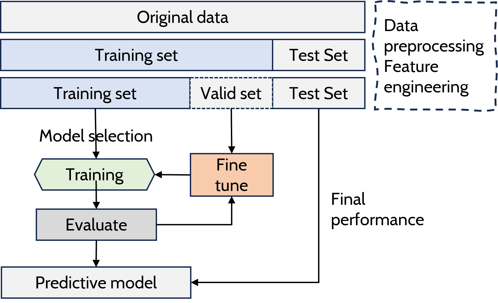
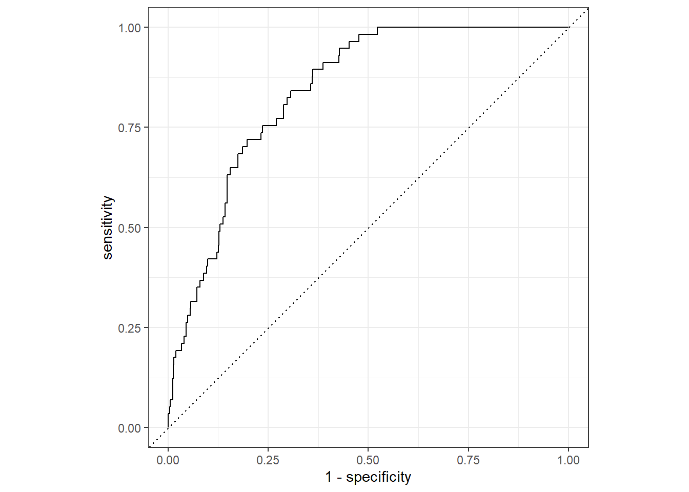
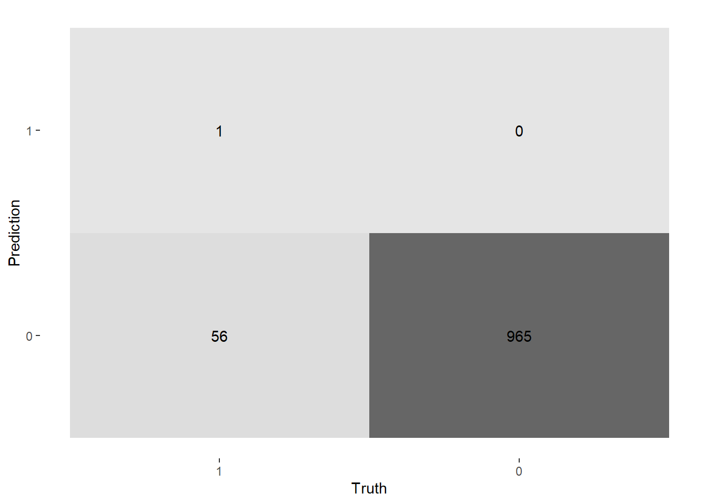
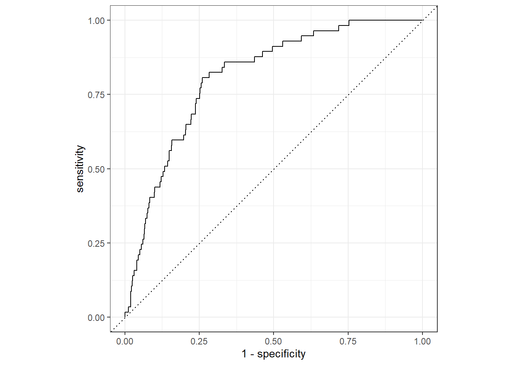

| agegp | alcgp | tobgp | ncases | ncontrols |
|---|---|---|---|---|
| 25-34 | 0-39g/day | 0-9g/day | 0 | 40 |
| 25-34 | 0-39g/day | 10-19 | 0 | 10 |
| 25-34 | 0-39g/day | 20-29 | 0 | 6 |
| 25-34 | 0-39g/day | 30+ | 0 | 5 |
| 25-34 | 40-79 | 0-9g/day | 0 | 27 |
| 25-34 | 40-79 | 10-19 | 0 | 7 |
| 25-34 | 40-79 | 20-29 | 0 | 4 |
| 25-34 | 40-79 | 30+ | 0 | 7 |
医学生入门机器学习-tidymodels基础与流程
1 写给医学伙伴的悄悄话
我是来自双非高校的一名普通老师，在探索医学和计算机学科的交叉过程中，走了很多弯路，这些路我不希望大家重走，而是直接迈入学习的快车道。
现今机器学习领域已经得到了极大发展，各种机器学习的工具和包层出不穷，自动化机器学习(auto machine learning，AutoML)的理念已经深入人心，无论什么领域，都应该专注业务本身，而非代码或算法，那是程序员和数学家的事，我们要做的就是如何用AutoML解决我们医学上的问题，而不是让编程和数学基础成为你解决科学问题的绊脚石。
机器学习领域Python和R已经是毫无争议的最佳编程语言。这其中tidymodels是R在AutoML领域的集大成者，学会了就能快速构建完整的机器学习。
2 医学数据
关于机器学习的很多基础概念，推荐大家到ShowMeAI知识社区-图解机器学习 | 机器学习基础知识查看。许多基础的概念，我不会在这里解释，也是督促大家自学。
我们首先要认识到，不同的数据，处理和分析的方式不同，就像杀苍蝇用手枪，如果用错了工具，任务是无法完成的。
医学常见的数据有哪些？
2.1 文本数据
在这里，我把文本形式存储的数据全部叫文本数据。这些数据，有些是按照事先约定好的形式和格式采集和录入而形成的表格型数据（像excel），也有普通的一本书、一篇文章这样的纯粹文字数据。其中，表格型数据（dataframe）是我们使用最多，最需要掌握的数据类型。
- 表格数据（dataframe）
dataframe 顾名思义，也叫方形数据（Rectangular Data）。Python（pandas包）和R都将这种数据称为dataframe，也是最常见的数据对象。 在R中，还有tibble和data.table这类dataframe的变种，本质上还是方形数据，只不过用来处理的包和风格不太相同。
Note
tidymodels能够分析的主要是dataframe。
下面的表格数据就是一个dataframe例子
- 纯粹文本Plain text
纯文本，因为它纯了，就是普通不加任何清洗和修改的自然文字段落。
2.2 其他数据
时间序列Time series data
大部分信号处理都是这类数据，比如心电图、股票、声波。
空间数据Spatial data
地图、导航类似的数据。
图数据Graph (or network) data
In computer science and information technology, the term graph typically refers to a depiction of the connections among entities, and to the underlying data structure.在计算机科学和信息技术中，术语”图”通常指实体之间的连接和底层数据结构的描述。如图神经网络。平时我们看到的知识图谱就属于这一类。
图像和视频数据image data and video data
3 机器学习类型和业务逻辑
在确定我们需要的机器学习类型时，我们要根据我们的医学业务来明确以下问题。
监督学习（预测的目标已做好标记，如死亡、患病）还是非监督学习（目标情况不清楚，比如哪两个中药搭配最常见）。
明确哪个是要预测的目标Y。
如果是监督学习，目标Y是分类问题，还是回归问题，如Figure 1。

Note
- In the regression problem, Y is numeric (e.g price, blood pressure).
- In the classification problem, Y takes values in a finite, unordered set (survived/died, cancer class of tissue sample).
表格数据中列的列是variable。作为医学研究，我们可以理解为研究对象的属性(attribute)，比如，病人的年龄、性别、收入等。variable是根据你要做的研究业务需求而设立的，比如最常见的RCT研究，不同的治疗方法或者说治疗组+对照组一起构成了group这个variable(列)。variable在计算机领域也被称为字段。
variable根据业务需要，还可分为两类
- 自变量（X），也被称为input, predictor, (independent) variable, regressor, covariate, feature, explanatory variable
- 因变量（Y），也被称为dependent variable, response, outcome, target, output, response variable
比如，下面这个数据，如果我们把是否早产premature作为要预测的Y（response），其他变量就可以定为X（predictors）
| f_age | m_age | weeks | premature | visits | gained | weight | sex_baby | smoke |
|---|---|---|---|---|---|---|---|---|
| 31 | 30 | 39 | full term | 13 | 1 | 6.88 | male | smoker |
| 34 | 36 | 39 | full term | 5 | 35 | 7.69 | male | nonsmoker |
| 36 | 35 | 40 | full term | 12 | 29 | 8.88 | male | nonsmoker |
| 41 | 40 | 40 | full term | 13 | 30 | 9.00 | female | nonsmoker |
| 42 | 37 | 40 | full term | NA | 10 | 7.94 | male | nonsmoker |
| 37 | 28 | 40 | full term | 12 | 35 | 8.25 | male | smoker |
| 35 | 35 | 28 | premie | 6 | 29 | 1.63 | female | nonsmoker |
| 28 | 21 | 35 | premie | 9 | 15 | 5.50 | female | smoker |
| 22 | 20 | 32 | premie | 5 | 40 | 2.69 | male | smoker |
| 36 | 25 | 40 | full term | 13 | 34 | 8.75 | female | nonsmoker |
4 机器学习的流程

数据准备(包含预处理和特征工程) -> 数据拆分-> 选择模型 -> 训练 -> 评价 -> 调参 -> 再评价 -> 应用(predict), Figure 2
“The tidymodels framework is a collection of packages for modeling and machine learning using tidyverse principles.” - tidymodels.org
tidymodels 是用于数据科学建模的一系列的包。安装方法install.packages("tidymodels")
tidymodels包含了一系列的R包，这些包括。
- rsample 高效的数据拆分和重采样
- parsnip 统一的模型接口，可用于尝试一系列模型，而不会陷入底层包的语法细节
- recipes 是用于数据预处理和特征工程工具的整洁接口
- workflow 将预处理、建模和后处理集合在一起,是最关键的包
- tune 可帮助您优化模型的超参数
- dials 创建和管理调整参数和参数网格与tune配合使用
- yardstick 使用性能指标来衡量模型的效果
- broom 将常见统计结果中的信息转换为用户友好、结构化的格式。
以上这些包在加载tidymodels的时候会一起加载，还有很多其他有用的工具需要手动进行加载。
还有些其他的包，大家也可以看看R packages by tidymodels
{kind=link}
tidymodels究竟怎么构建这个机器学习的过程,从这个Figure 3中,我们可以根据对应的包略见一二。
正所谓大道至简，我今天用一句话来阐释tidymodels的监督机器学习实施步骤：
确定好你要预测的目标（response，regression or classification）， rsample按照训练需要将数据进行分割，recipes对数据进行预处理和特征工程，parsnip选定一个模型和引擎，yardstick确定模型的评价指标， workflow将这些统筹起来，然后开始训练，评价反馈，用tune调整模型并获得最佳模型，最终在test set 做最终模型评价。
5 tidymodels实践
下面和我一起来分步完成一次机器学习实践吧。
5.1 载入package
5.2 tidymodels流程初体验
Code
#读取数据
strokedf <- read_csv("./datasets/stroke_data.csv", col_types = cols(stroke = "f") )
set.seed(123)
#按照8：2对数据进行拆分Training，test
data_split <- initial_split(strokedf,
prop = 0.80,
strata = stroke)
train_stroke <- training(data_split)
test_stroke <- testing(data_split)
#数据预处理
stroke_res <- recipe(stroke ~ ., data = train_stroke) %>%
update_role(id, new_role = "ID") %>%
step_impute_bag(all_predictors()) %>%
step_normalize(all_numeric_predictors()) %>%
step_zv(all_predictors())
#设定模型
lr_mod <-
logistic_reg() %>% #逻辑回归
set_engine("glm")
#workflow集成
stroke_flow <-
workflow() %>%
add_model(lr_mod) %>%
add_recipe(stroke_res)
#训练模型（拟合）
stroke_fit <-
stroke_flow %>%
fit(data = train_stroke)
#测试集评估
stroke_aug <-
augment(stroke_fit, test_stroke) %>%
select(stroke,.pred_1,.pred_class)
stroke_aug %>%
roc_curve(truth = stroke, .pred_1) %>% #ROC曲线
autoplot()

| .metric | .estimator | .estimate |
|---|---|---|
| roc_auc | binary | 0.8391237 |
5.3 交叉验证优化训练
刚刚我们流程过了一遍，但有些同志可能会纳闷，好像训练的时候数据集没有划分啊！并没有Validation set这个。 下面我们就以这种方式来训练，并且我们要提到一种叫交叉验证的训练方式(Cross-Validation)。什么是交叉验证，我们看Figure 4，这就是一个典型的5折交叉验证，将Training set划分成5份，然后每1份都做一次Validation set，其余作为Training set，反复训练5次，取平均值。
{kind=link}
k 折交叉验证对 k 个不同分组训练的结果进行平均来减少方差，因此模型的性能对数据的划分就不那么敏感，对数据的使用也会更充分，模型评估结果更加稳定。下面我们来以随机森林机器模型，采用5折交叉验证来实现一个新的训练。
Code
#读取数据
strokedf <- read_csv("./datasets/stroke_data.csv", col_types = cols(stroke = "f") )
set.seed(123)
#按照8：2对数据进行拆分Training，test
data_split <- initial_split(strokedf,
prop = 0.80,
strata = stroke)
train_stroke <- training(data_split)
test_stroke <- testing(data_split)
#数据预处理
stroke_res <- recipe(stroke ~ ., data = train_stroke) %>%
update_role(id, new_role = "ID") %>%
step_impute_bag(all_predictors()) %>%
step_normalize(all_numeric_predictors()) %>%
step_zv(all_predictors())
#设定模型
rf_mod <-
rand_forest(trees = 1000) %>% #随机森林模型
set_engine("ranger") %>%
set_mode("classification")
#workflow集成
stroke_flow <-
workflow() %>%
add_recipe(stroke_res)%>%
add_model(rf_mod)
# Cross validation
set.seed(123)
cv_folds <-
vfold_cv(train_stroke, v = 5)
#训练模型（拟合）
rf_res <- stroke_flow %>%
fit_resamples(cv_folds)
collect_metrics(rf_res, summarize = FALSE)| id | .metric | .estimator | .estimate | .config |
|---|---|---|---|---|
| Fold1 | accuracy | binary | 0.9511002 | Preprocessor1_Model1 |
| Fold1 | roc_auc | binary | 0.8399100 | Preprocessor1_Model1 |
| Fold1 | brier_class | binary | 0.0421900 | Preprocessor1_Model1 |
| Fold2 | accuracy | binary | 0.9474328 | Preprocessor1_Model1 |
| Fold2 | roc_auc | binary | 0.8530833 | Preprocessor1_Model1 |
| Fold2 | brier_class | binary | 0.0447018 | Preprocessor1_Model1 |
| Fold3 | accuracy | binary | 0.9511002 | Preprocessor1_Model1 |
| Fold3 | roc_auc | binary | 0.8170630 | Preprocessor1_Model1 |
| Fold3 | brier_class | binary | 0.0436958 | Preprocessor1_Model1 |
| Fold4 | accuracy | binary | 0.9596083 | Preprocessor1_Model1 |
| Fold4 | roc_auc | binary | 0.7657313 | Preprocessor1_Model1 |
| Fold4 | brier_class | binary | 0.0386978 | Preprocessor1_Model1 |
Code
| .metric | .estimator | .estimate |
|---|---|---|
| roc_auc | binary | 0.8092719 |

这次我们又用随机森林训练了一个模型，这个模型在训练时采用了5折交叉验证的方式，在训练过程中能够更客观的看待训练的效果，并减少偶然一次训练可能产生的过拟合等现象。但有一件事我们还没做，就是调参。在训练过程中，根据训练的效果，调整模型的参数，从而达到最佳效果。而本次我们并没有调参，都是用的默认参数，预测效果不一定最佳。我们将在后面的课时对机器学习的各个步骤进行详细讲解，实现模型性能的提升，达到最佳效果。
5.4 模型的选择和快速构建
大家体会到了tidymodels的便捷，但究竟它支持多少种模型，又如何更加快速的进行构建呢？我们需要两个工具
1.Search parsnip models,从这里我们可以查到所有支持的模型. 2.使用usemodels包来自动构建整个机器学习的全流程(但支持的模型有限).
glmnet_recipe <-
recipe(formula = stroke ~ ., data = strokedf) %>%
step_zv(all_predictors()) %>%
step_normalize(all_numeric_predictors())
glmnet_spec <-
logistic_reg(penalty = tune(), mixture = tune()) %>%
set_mode("classification") %>%
set_engine("glmnet")
glmnet_workflow <-
workflow() %>%
add_recipe(glmnet_recipe) %>%
add_model(glmnet_spec)
glmnet_grid <- tidyr::crossing(penalty = 10^seq(-6, -1, length.out = 20), mixture = c(0.05,
0.2, 0.4, 0.6, 0.8, 1))
glmnet_tune <-
tune_grid(glmnet_workflow, resamples = stop("add your rsample object"), grid = glmnet_grid) 6 Homework
有一个新的数据集./datasets/stroke_prediction.csv,也是中风(Diagnosis为Response)预测,数据集按9:1进行划分,请你用C5.0引擎,decision_tree(决策树)模型,10折交叉验证进行训练,并展示结果,最后在test set进行结果预测,并展示roc曲线.
7 Session information
R version 4.4.0 (2024-04-24 ucrt)
Platform: x86_64-w64-mingw32/x64
Running under: Windows 11 x64 (build 22621)
Matrix products: default
locale:
[1] LC_COLLATE=Chinese (Simplified)_China.utf8
[2] LC_CTYPE=Chinese (Simplified)_China.utf8
[3] LC_MONETARY=Chinese (Simplified)_China.utf8
[4] LC_NUMERIC=C
[5] LC_TIME=Chinese (Simplified)_China.utf8
time zone: Asia/Shanghai
tzcode source: internal
attached base packages:
[1] stats graphics grDevices utils datasets methods base
other attached packages:
[1] ranger_0.16.0 magrittr_2.0.3 readr_2.1.5 usemodels_0.2.0
[5] yardstick_1.3.1 workflowsets_1.1.0 workflows_1.1.4 tune_1.2.1
[9] tidyr_1.3.1 tibble_3.2.1 rsample_1.2.1 recipes_1.1.0
[13] purrr_1.0.2 parsnip_1.2.1 modeldata_1.4.0 infer_1.0.7
[17] ggplot2_3.5.1 dplyr_1.1.4 dials_1.2.1 scales_1.3.0
[21] broom_1.0.6 tidymodels_1.2.0
loaded via a namespace (and not attached):
[1] tidyselect_1.2.1 timeDate_4032.109 farver_2.1.2
[4] fastmap_1.2.0 digest_0.6.36 rpart_4.1.23
[7] timechange_0.3.0 lifecycle_1.0.4 survival_3.5-8
[10] compiler_4.4.0 rlang_1.1.4 tools_4.4.0
[13] utf8_1.2.4 yaml_2.3.9 data.table_1.15.4
[16] knitr_1.48 labeling_0.4.3 bit_4.0.5
[19] DiceDesign_1.10 withr_3.0.0 nnet_7.3-19
[22] grid_4.4.0 fansi_1.0.6 colorspace_2.1-0
[25] future_1.33.2 globals_0.16.3 iterators_1.0.14
[28] MASS_7.3-60.2 cli_3.6.3 crayon_1.5.3
[31] rmarkdown_2.27 generics_0.1.3 rstudioapi_0.16.0
[34] future.apply_1.11.2 tzdb_0.4.0 splines_4.4.0
[37] parallel_4.4.0 vctrs_0.6.5 hardhat_1.4.0
[40] Matrix_1.7-0 jsonlite_1.8.8 hms_1.1.3
[43] bit64_4.0.5 listenv_0.9.1 foreach_1.5.2
[46] gower_1.0.1 glue_1.7.0 parallelly_1.37.1
[49] codetools_0.2-20 lubridate_1.9.3 gtable_0.3.5
[52] munsell_0.5.1 GPfit_1.0-8 pillar_1.9.0
[55] furrr_0.3.1 htmltools_0.5.8.1 ipred_0.9-15
[58] lava_1.8.0 R6_2.5.1 lhs_1.2.0
[61] vroom_1.6.5 evaluate_0.24.0 lattice_0.22-6
[64] backports_1.5.0 class_7.3-22 Rcpp_1.0.13
[67] prodlim_2024.06.25 xfun_0.46 pkgconfig_2.0.3